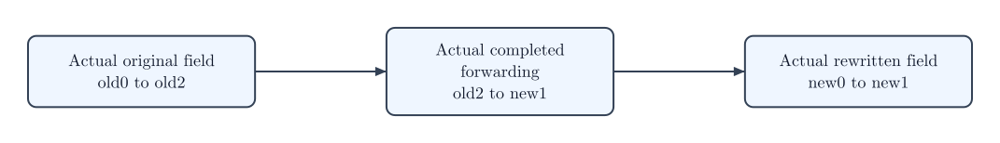
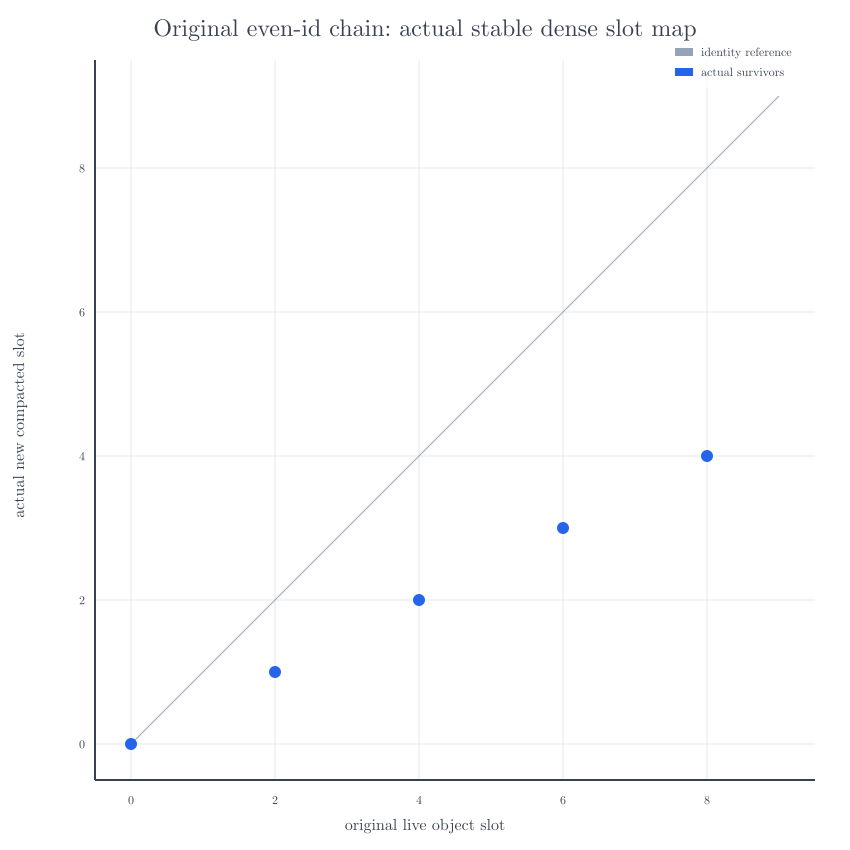
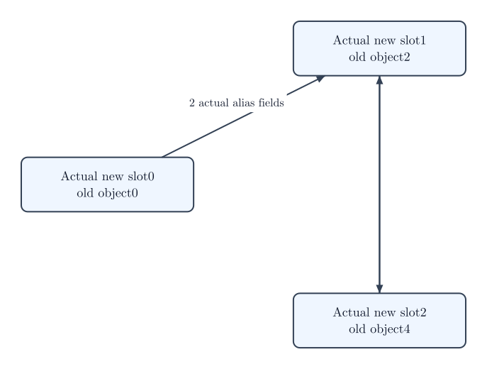
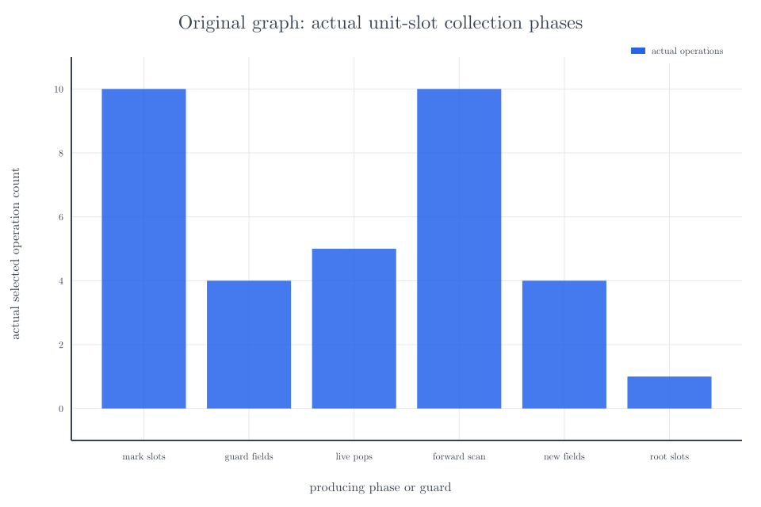

Stable mark-compact object-slot modeling
Abstract
A compacting collector needs both liveness and a consistent address translation for every surviving reference. This native unit-slot model computes stable dense forwarding and rewrites survivor fields and roots. We retain the original ten-slot even-id chain, expose actual producing phases, and distinguish modeled slot relocation from physically moving or freeing C++ objects.
Tiny actual forwarding and field translation
First mark every object reachable from the roots. Scan old slots in increasing order, assigning each live object the next dense new slot and assigning unreachable objects minus one. Only after this complete forwarding map exists, translate every field of every live owner and every original root through the same map. Because reachability is closed under references, each live owner’s referenced target is also live.
For four old slots with root0 and links0-to2-to3, old slot1 is unreachable. The stable map is old0-to-new0, old2-to-new1 and old3-to-new2. The actual original field0-to2 becomes new0-to1. The table and diagram show the real forwarding scan and the first actual field rewrite, not an inferred mapping produced by a second collector run.
#include <dm/dm.hpp>
int main() {
std::filesystem::create_directories("build");
dm::algorithms::ObjectGraph g{4, {{2}, {}, {3}, {}}, {0}, {}};
auto t = dm::algorithms::mark_compact_trace(g);
std::print("| actual old slot | actual live mark | next slot before | actual assigned slot or minus1 | " "next slot after |\n| ---: | --- | ---: | ---: | ---: |\n");
for (auto &f : t.forwarding)
std::print("| {} | {} | {} | {} | {} |\n", f.object, f.live,
f.next_before, f.assigned, f.next_after);
auto &r = t.references.front();
dm::graphics::Diagram d;
d.node("old", {0, 0},
std::format("Actual original field\nold{} to old{}", r.owner_old,
r.target_old)).node("map", {6, 0},
std::format("Actual completed forwarding\nold{} to new{}",
r.target_old,
r.target_new)).node(
"new", {12, 0},
std::format("Actual rewritten field\nnew{} to new{}", r.owner_new,
r.target_new)).edge("old", "map").edge("map", "new");
d.save_svg("build/mark_compact_tiny.svg");
}| actual old slot | actual live mark | next slot before | actual assigned slot or minus1 | next slot after |
|---|---|---|---|---|
| 0 | true | 0 | 0 | 1 |
| 1 | false | 1 | -1 | 1 |
| 2 | true | 1 | 1 | 2 |
| 3 | true | 2 | 2 | 3 |

Original ten-slot even-id live chain
Retain ten old slots, root0 and chain0-to2-to4-to6-to8, with all odd ids unreachable. The actual survivor order is[0,2,4,6,8], with new slots[0,1,2,3,4]. The original-id forwarding table contains minus one for every unreachable slot. The new survivor-field rows form0-to1-to2-to3-to4, and the actual root becomes slot0.
The figure compares old survivor slots with actual dense new slots against the identity reference. Both axes use identical numerical and physical scales. Stable order means old ids remain increasing in the new slot order; it does not preserve each original address. Denseness means no holes in this abstract unit-slot result, not a statement that arbitrary-sized C++ objects have been physically relocated in memory.
#include <dm/dm.hpp>
int main() {
std::filesystem::create_directories("build");
auto a =
dm::algorithms::mark_compact_analyze(dm::algorithms::mark_compact_demo_graph());
std::vector<double> x, y;
std::print("| actual original slot | actual final live mark | actual new slot or minus1 |\n| ---: | " "---: | ---: |\n");
for (std::size_t i = 0; i < a.result.marked.size(); ++i) {
std::print("| {} | {} | {} |\n", i, int(a.result.marked[i]),
a.result.new_address[i]);
if (a.result.marked[i]) {
x.push_back(i);
y.push_back(a.result.new_address[i]);
}
}
std::print("\n| actual new owner slot | actual field index | actual translated target slot |\n| ---: | " "---: | ---: |\n");
for (std::size_t i = 0; i < a.result.updated_refs.size(); ++i)
for (std::size_t j = 0; j < a.result.updated_refs[i].size(); ++j)
std::print("| {} | {} | {} |\n", i, j, a.result.updated_refs[i][j]);
std::print("\nActual live output slots {}; actual relocated first root {}.\n",
a.result.order.size(), a.relocated_roots.front());
auto p = dm::graphics::RPlot::create();
p.line({0, 9}, {0, 9}, "identity reference", {148, 163, 184}, 1).points(
x, y, "actual survivors", {37, 99, 235}, 6).size(850, 850).margins(
95, 35, 60, 70).x_limits(-.5, 9.5).y_limits(-.5, 9.5).title(
"Original even-id chain: actual stable dense slot map").x_label(
"original live object slot").y_label("actual new compacted slot").save_svg("build/mark_compact_original.svg");
}| actual original slot | actual final live mark | actual new slot or minus1 |
|---|---|---|
| 0 | 1 | 0 |
| 1 | 0 | -1 |
| 2 | 1 | 1 |
| 3 | 0 | -1 |
| 4 | 1 | 2 |
| 5 | 0 | -1 |
| 6 | 1 | 3 |
| 7 | 0 | -1 |
| 8 | 1 | 4 |
| 9 | 0 | -1 |
| actual new owner slot | actual field index | actual translated target slot |
|---|---|---|
| 0 | 0 | 1 |
| 1 | 0 | 2 |
| 2 | 0 | 3 |
| 3 | 0 | 4 |
Actual live output slots 5; actual relocated first root 0.

Alias, cycle and root preservation
A single completed map must be used everywhere. If two fields reference the same old object, both become the same new slot. Field order and duplicate targets are retained. Cyclic references remain cyclic after translation. Original root order and duplicate roots are retained in the new analysis API’s relocated_roots vector; the historical MarkCompactResult keeps its original field layout and callers needing roots should use the analysis result.
The next exact graph has duplicate fields0-to2, a live2-to4-to2 cycle, and original roots[0,0,4]. Its surviving old ids are[0,2,4], translated fields are[[1,1],[2],[1]], and roots become[0,0,2]. Old3-to5 is unreachable and omitted. The table preserves every actual field/root slot even where graph geometry shares the same drawn edge. The figure annotates the actual two aliases from new0 to new1 rather than suggesting distinct target objects.
#include <dm/dm.hpp>
int main() {
std::filesystem::create_directories("build");
dm::algorithms::ObjectGraph g{6, {{2, 2}, {}, {4}, {5}, {2}, {}}, {0, 0, 4},
{}};
auto t = dm::algorithms::mark_compact_trace(g);
auto &a = t.analysis;
std::print("| actual old owner | actual new owner | actual original field slot | actual old target | " "actual new target |\n| ---: | ---: | ---: | ---: | ---: |\n");
for (auto &r : t.references)
std::print("| {} | {} | {} | {} | {} |\n", r.owner_old, r.owner_new,
r.field, r.target_old, r.target_new);
std::print("\n| actual original root slot | actual old root | actual relocated root |\n| ---: | ---: | " "---: |\n");
for (auto &r : t.roots)
std::print("| {} | {} | {} |\n", r.slot, r.old_id, r.new_slot);
dm::graphics::Diagram d;
d.node("0", {0, 0},
std::format("Actual new slot0\nold object{}", a.result.order[0])).node("1", {6, 3}, std::format("Actual new slot1\nold object{}", a.result.order[1])).node("2", {6, -3}, std::format("Actual new slot2\nold object{}", a.result.order[2])).edge("0", "1", std::format("{} actual alias fields", a.result.updated_refs[0].size())).edge("1", "2").edge("2", "1");
d.save_svg("build/mark_compact_aliases.svg");
}| actual old owner | actual new owner | actual original field slot | actual old target | actual new target |
|---|---|---|---|---|
| 0 | 0 | 0 | 2 | 1 |
| 0 | 0 | 1 | 2 | 1 |
| 2 | 1 | 0 | 4 | 2 |
| 4 | 2 | 0 | 2 | 1 |
| actual original root slot | actual old root | actual relocated root |
|---|---|---|
| 0 | 0 | 0 |
| 1 | 0 | 0 |
| 2 | 4 | 2 |

Actual phases and the limits of the slot model
The shared canonical liveness producer validates the complete graph before indexing, including unreachable bad fields, then marks on pushing. Roots and fields are examined in their original order, with pending objects popped LIFO; duplicate roots/fields and cycles never cause duplicate pushes. The trace owns that one real marking history plus every actual old-slot forwarding decision and each live-field/root rewrite. It never reruns reachability or infers phase histories from the final map.
Total complete validation, traversal and rewriting work is O(N+E+R). This implementation owns marks, a stack, a forwarding vector, survivor order, translated fields and relocated roots, requiring O(N+E_live+R) result/working storage in addition to input. It computes graph/layout metadata; it neither moves/frees C++ payloads nor rewrites raw pointers, and it is not an in-place physical collector. The earlier no-extra-space description concerned a different implementation model and does not describe these returned C++ containers.
Every object occupies one modeled slot. ObjectGraph.sizes metadata is entirely ignored by these slot collectors, even if supplied values would be invalid for a size-aware method. The independent control below supplies size100 for every original object and verifies that the actual forwarding map remains unchanged. No byte-address claim is inferred from those ignored values. Empty roots leave every object unreachable; an empty valid graph yields an empty result.
Actual capture admission includes marking’s2*N+E+R+S base input/mark slots and its real root/pop/live-field events, plus each actual forward/live-field/root record. Default cap is one million; zero disables the optional cap. Fields within records, row headers, capacities, returned/runtime mark/result copies and physical bytes are excluded. Captures own the original graph once and are complete or throw. No external dataset is needed for these exact graph/layout controls.
#include <dm/dm.hpp>
int main() {
std::filesystem::create_directories("build");
auto g = dm::algorithms::mark_compact_demo_graph();
auto a = dm::algorithms::mark_compact_analyze(g);
g.sizes.assign(g.num_objects, 100);
auto b = dm::algorithms::mark_compact_analyze(g);
auto &w = a.work;
std::print("Actual forwarding unchanged under supplied size100 metadata: {}.\n\n| actual phase " "observation | actual count |\n| --- | ---: |\n| initialized mark slots | {} |\n| complete " "validated fields including garbage | {} |\n| actual live-object pops | {} |\n| actual " "forwarding slots | {} |\n| actual translated live fields | {} |\n| actual translated root " "slots | {} |\n",
a.result.new_address == b.result.new_address,
w.marking.initialized, w.marking.validation.references,
w.marking.pops, w.scanned, w.rewritten, w.roots);
auto p =
dm::graphics::RPlot::barplot({double(w.marking.initialized),
double(w.marking.validation.references),
double(w.marking.pops), double(w.scanned),
double(w.rewritten), double(w.roots)},
{"mark slots", "guard fields", "live pops",
"forward scan", "new fields", "root slots"},
"actual operations", {37, 99, 235});
p.x_label("producing phase or guard").y_label("actual selected operation count");
p.title("Original graph: actual unit-slot collection phases").save_svg(
"build/mark_compact_work.svg");
}Actual forwarding unchanged under supplied size100 metadata: true.
| actual phase observation | actual count |
|---|---|
| initialized mark slots | 10 |
| complete validated fields including garbage | 4 |
| actual live-object pops | 5 |
| actual forwarding slots | 10 |
| actual translated live fields | 4 |
| actual translated root slots | 1 |

Verification and references
Native tests exhaust all4096 three-vertex directed-graph/root-set combinations
against independent transitive closure, verify every stable map/order/field/root
output and actual phase record, and retain the original even-id chain. Shared
liveness tests inspect real root/pop/reference/stack transitions, duplicates,
self references, cycles, complete invalid unreachable fields, exact quotas,
ignored sizes, ownership and a100000-object iterative chain. Existing
memory/format regression suites remain. The ten-report batch passes 95 CTest
cases, 30 directly instrumented ASan/UBSan cases, 121 compiled and executed
public examples, 601/601 scoped documentation definitions and 11 representative
hovers. Independent integer, Fraction, graph, string and NumPy references verify
82,729 records, including the complete original seeded LSH study. Frozen
comparisons preserve ordinary legacy results; malformed-input,
sentinel-collision, ownership and explicit-budget corrections are documented
above. Thirteen checkout headers and thirteen installed headers compile
independently, and an installed-header native consumer links and runs. Each
complete report program runs against the checkout library; all four native
figures are reviewed and HTML/Markdown exports preserve computed results and
image bytes. Batch receipts: build/mepml-conversion/batch-214-223/.
F. L. Morris(1978), A Time- and Space-Efficient Garbage Compaction Algorithm, Communications of the ACM21(8),662–665, studies physical garbage compaction. This report illustrates liveness, forwarding and consistent reference translation using an explicitly allocating unit-slot graph model; it does not claim to implement Morris’s physical compaction algorithm.